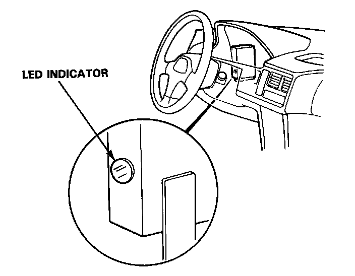
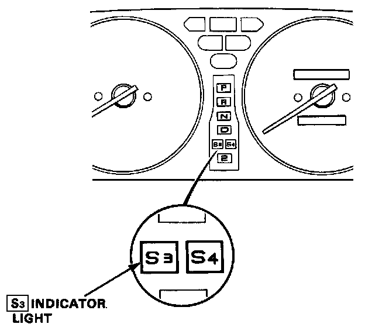

Description of On-Board Diagnostics
DESCRIPTION OF ON BOARD DIAGNOSTICSSystem Operation


The Transmission Control Module (TCM) has a built-in self-diagnosis function. The [S3] indicator light in the gauge assembly and LED indicator on TCM blink when the TCM senses an abnormality in the input or output systems. The number of blinks from the LED indicator varies according to the problem, which can be diagnosed by counting the number of blinks.
- When the ignition switch is turned ON, the [S3] indicator light comes on for about two seconds regardless of whether there is a problem. The [S3] indicator light will also come on when in [S3] mode.
- If there is a system problem, the [S3] indicator light will come on and continue to blink until the ignition key is turned OFF. When the ignition key is turned ON again, the [S3] indicator light will not blink again for the original problem. But if the TCM senses the original abnormality again with ignition switch ON, the [S3] indicator light will blink again for the original problem. Therefore, even though the [S3] indicator light does not come on when turning the ignition key ON, check the LED display for automatic transmission problem diagnosis.
- Since the Diagnostic Trouble Code (DTC) is retained in memory, it will blink again whenever the ignition key is turned on. If the code is not memorized, check the following causes:
- Check the Alternator Sensor fuse (10 A) in the under-hood main fuse box.
- Check for an open circuit in the WHT/YEL wire between the Alternator Sensor fuse (10 A) and A/T control unit B 12 terminal.
- After making repair, disconnect the Alternator Sensor fuse (10 A) in the under-hood main fuse box for more than ten seconds to reset LED display memory.